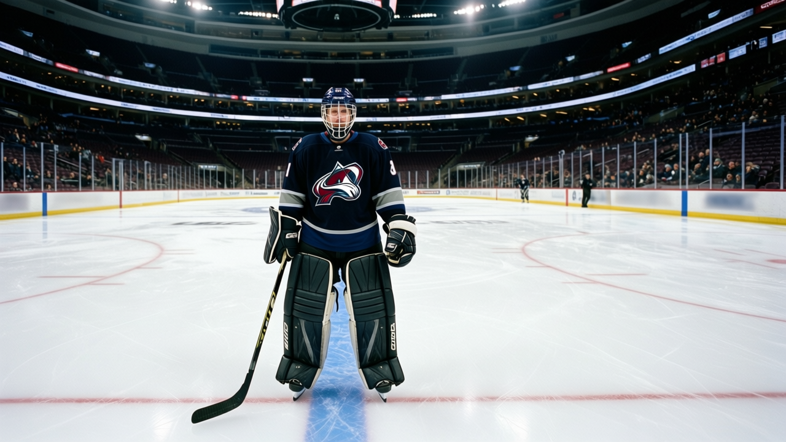

12,051 EMPTY SEATS, AN 80 ON THE FOURTH LINE, AND A 66 PLAYING FIRST-PAIR D: PHOENIX IS A CRIME SCENE
Ladislav Nagy has the best scoring rate on the roster. He plays third-line center. The building has the worst crowd in hockey. Both of these facts are the coach's fault.
 Mickey "The Mick" DonnellyColumnist, ex-goalie · The Penalty Box
Mickey "The Mick" DonnellyColumnist, ex-goalie · The Penalty Box
 Ladislav Nagy80 has 28 points in 35 games. 637 minutes, 16 goals, 12 assists. He plays third-line center for
Ladislav Nagy80 has 28 points in 35 games. 637 minutes, 16 goals, 12 assists. He plays third-line center for  Phoenix Coyotes. His overall is 80. The man sitting above him at 1st-line wing,
Phoenix Coyotes. His overall is 80. The man sitting above him at 1st-line wing,  Nikolai Antropov75, carries a 75 and has 4 goals and 21 points in 44 games over 701 minutes. Four goals. In 701 minutes.
Nikolai Antropov75, carries a 75 and has 4 goals and 21 points in 44 games over 701 minutes. Four goals. In 701 minutes.
You want more?  Brian Savage73 plays 2nd-line wing with a 73 overall. 29 points in 44 games. 555 minutes. Nagy scores more per minute than either of them and he watches them take the ice in front of him on the power play while he sits.
Brian Savage73 plays 2nd-line wing with a 73 overall. 29 points in 44 games. 555 minutes. Nagy scores more per minute than either of them and he watches them take the ice in front of him on the power play while he sits.
The coach does it. The building watches. 12,051 people per game. Worst in the league. You pay $80 to sit in a barn that has 12,051 people in it, and the team you watch plays an 80-rated center on the third line. You can feel it from the upper deck when a guy that good is getting 637 minutes.
The defense is worse
 Cale Hulse66 has 0 points in 5 games. 137 minutes. His overall reads 66. He plays first-pair left defense.
Cale Hulse66 has 0 points in 5 games. 137 minutes. His overall reads 66. He plays first-pair left defense.  Drake Berehowsky72 sits at 72, plays 31LD, 42RD, and penalty kill. The 72 is a fourth-pairing man. The 66 is a top-pairing man. The Development Index has Hulse at -2 and he's still out there.
Drake Berehowsky72 sits at 72, plays 31LD, 42RD, and penalty kill. The 72 is a fourth-pairing man. The 66 is a top-pairing man. The Development Index has Hulse at -2 and he's still out there.
The room is at 87.8, fourth-worst in hockey.  Daymond Langkow75 is sitting at 74 on the Morale Scale, earning $2.10M. The club is 16-23-4, 38 points, 136 goals for, 159 against. They're in the bottom five in goals scored and they can't even put their best forward on the top line.
Daymond Langkow75 is sitting at 74 on the Morale Scale, earning $2.10M. The club is 16-23-4, 38 points, 136 goals for, 159 against. They're in the bottom five in goals scored and they can't even put their best forward on the top line.
The profit machine hums on empty seats
Here's the part that makes me sick. $13.33M in profit. The building made money. $46.52M in revenue on a $47.81M payroll. They spend more on hockey than they take in and the back office still printed a profit. You are subsidizing incompetence with your wallet and they don't even need you to show up. 12,051 per game, $80 a seat, and the profit statement still clears. They don't give a damn about the product.
| Player | Overall | GP | Points | Minutes | Role |
|---|---|---|---|---|---|
| Ladislav Nagy | 80 | 35 | 28 | 637 | 3rd line C |
| Nikolai Antropov | 75 | 44 | 21 | 701 | 1st line LW |
| Brian Savage | 73 | 44 | 29 | 555 | 2nd line LW |
| Cale Hulse | 66 | 5 | 0 | 137 | 1st pair LD |
| Drake Berehowsky | 72 | 44 | 19 | 566 | 3rd/4th pair |
I've seen bad coaching. I've seen a 79-rated center coached off the map in Detroit, a 68 at second-line wing in Pittsburgh. This is different. This is a franchise with the worst attendance in hockey playing its best player on the third line and asking people to pay $80 for the privilege of watching it.